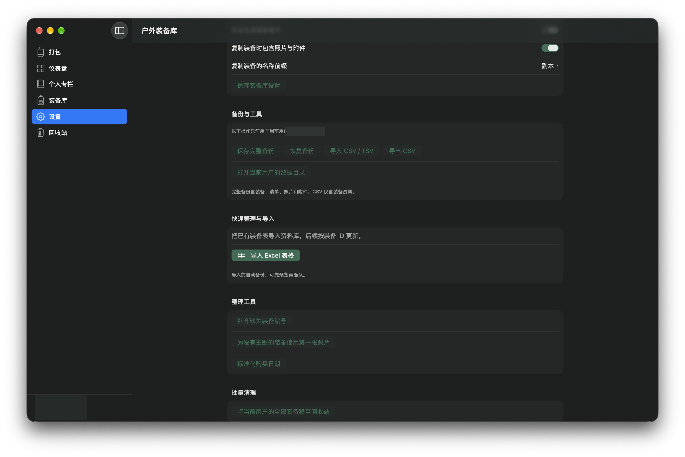

装备档案01 / GEAR
把装备资料，
整理成自己的库。
为每件物品维护品牌、型号、分类与子分类、数量、单件重量、购买信息、存放位置、标签和备注；支持主图、多张照片及任意附件，也能建立父子装备关系。
- 按分类、状态、名称、编号、品牌或型号筛选与排序
- 收藏常用装备；批量改状态、复制、移入回收站或恢复
- 记录可用、想买、借出、已出售和损坏等状态
MACOS 原生 · 本机优先 · 开放源码
管理装备，核对负重，安排路线与路餐；回来后，把走过的路和当时带的装备一起记下来。

整理 · 计划 · 记录 / 让每次出发都有迹可循
功能全览 WHAT’S INSIDE
按“整理装备 → 规划出发 → 记录回程”拆成 10 个模块。每张卡片都说明实际用途，并直达对应功能源码。
为每件物品维护品牌、型号、分类与子分类、数量、单件重量、购买信息、存放位置、标签和备注；支持主图、多张照片及任意附件，也能建立父子装备关系。
从装备库选择物品并填写携带数量，查看已知重量、装备价值与未补全项目；损坏装备不会加入清单。
导入 GPX / KML 轨迹，或按地点和路线名搜索；地点搜索可选 10、30 或 60 公里范围。预览地图与里程，可组合多段路线，并为出发时间查询天气。
为最多 60 天的行程设置日期、人数和每日能量目标；逐天按餐次登记食物数量、包装重量、热量、价格、准备方式与备注，并设置备用粮和出发携水量。
可由当前打包清单建立徒步记录，也可手动补录日期、路线、天气、感受和游记；导入 GPX / KML 轨迹，记录路餐与水，并保存当次装备和携带数量快照。
Excel 可选工作表、匹配字段并先看导入预览；导入前自动备份。CSV / TSV 可导入、CSV 可导出。完整备份含装备、清单、照片与附件；CSV 仅含装备资料。
用统计图查看装备分类数量、重量或购置金额分布；概览在库装备与支出，并列出收藏装备速览，可从统计卡片直接跳回装备库。
每项装备可设置主图、追加多张照片和其他附件；支持查看大图与恢复原图。可选产品照整理工具把图片统一为居中方形 PNG，并可加白底与柔和阴影。
在一台 Mac 上建立多个本机用户资料库，分别保存装备、照片、清单和设置；可编辑名称与头像。打包时能把其他用户的装备加入借用清单。
设置浅色、深色或跟随系统外观，修改资料库名称与显示货币；可自动生成装备编号，选择复制时是否带上照片和附件，并按需刷新参考汇率。
实际应用截图 CAPTURED FROM THE APP
直接从这台 Mac 正在运行的应用窗口截取。这张是设置与数据管理页面；用户名和头像已遮挡，未包含装备清单、价格或行程内容。

实际应用窗口截图；公开前已遮挡个人头像与用户名。未发布真实装备记录、价格、照片、附件或徒步行程。
数据与许可 LOCAL BY DEFAULT
装备档案、照片、附件、备份和徒步记录默认保存在 Mac。本公开仓库只有空白初始化模板与公开路线目录，不包含个人清单、照片、历史记录或备份。
应用源码使用 GNU AGPL-3.0；路线数据库按其元数据另行标注 ODbL-1.0。路线与天气联网功能会访问相应服务，详情和来源均可查阅。
继续了解 OPEN PROJECT
目前公开的是源码和 Xcode 工程，可按仓库说明在 Mac 上构建。
macOS 13+ · Xcode 15+ · SwiftUI · GNU AGPL-3.0